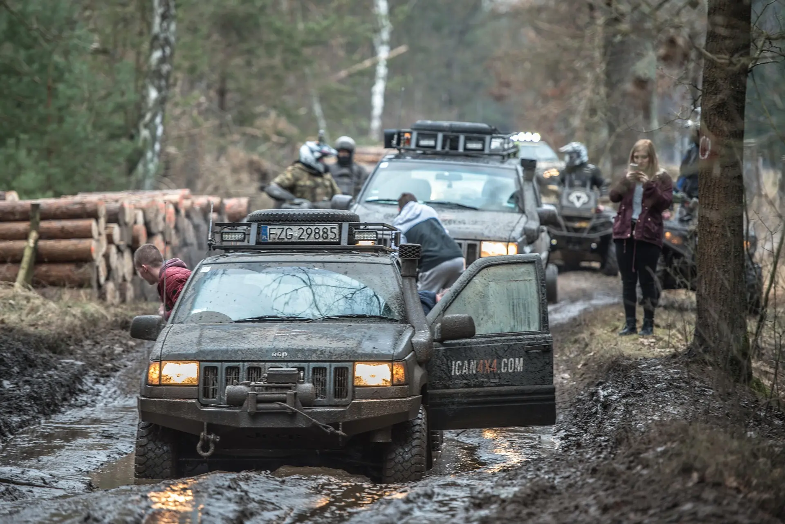
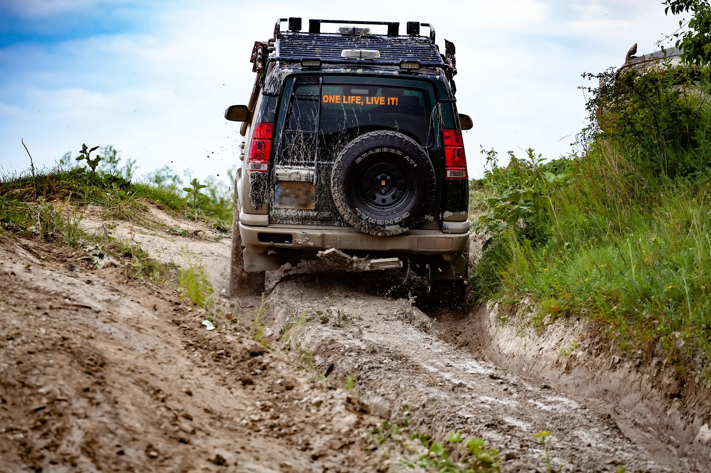

Colle Sommeiller
A High‑Altitude 4x4 Adventure
Colle Sommeiller is one of the highest drivable roads in Europe, climbing from Bardonecchia at around 1,300 m to roughly 3,000 m over a 26–27 km mountain track. The route crosses the entire Rochemolles Valley, passing the alpine village of Rochemolles and the dramatic Rochemolles Dam before rising into a stark, glacial landscape where the terrain becomes increasingly lunar as you approach the summit.
From Bardonecchia to the Summit
The ascent begins gently, following the Rochemolles stream through classic alpine scenery. As
you leave the village and reach the dam,
the character of the track changes sharply.
Rochemolles Dam sits in a bowl of steep mountains, including the rocky pyramid of Pierre Menue at
3,506 m. From here, the surface becomes rougher and more technical.
Switchbacks and rock sections dominate the mid‑mountain climb, where loose stone, ruts, and water‑cut
channels demand careful line choice and steady low‑range control.
The upper slopes rise through scree and glacial debris, with the landscape becoming increasingly
barren and exposed.
The summit plateau reveals a wide, open view of the surrounding peaks, often with a small alpine lake and a bivouac shelter
nearby.
The road is typically open only in summer, as winter closures can last from October to June due to snow.
Raw, Remote, and Rewarding
Colle Sommeiller has a distinctive high‑altitude energy that makes it perfect for a 4x4 adventure narrative.
Altitude you can feel — the air thins, temperatures drop, and the world becomes stripped back to rock
and sky.
Silence and solitude — no cafés, no barriers, no curated viewpoints; just the mountain and the sound
of your engine.
A sense of progression — every kilometre feels earned, and reaching the summit feels like a genuine
achievement rather than a simple destination.
The higher you climb, the more the environment shifts from alpine meadows to a rugged, almost lunar world — a
transformation that naturally builds tension and anticipation.
A True Test of Driver and Machine
While not extreme rock‑crawling, the route demands respect and rewards skill.
Loose surfaces require momentum control and confident throttle modulation.
Tight switchbacks test steering precision and low‑range finesse.
Unpredictable conditions — snowfields, meltwater, and degraded surfaces can change the difficulty from
one week to the next.
Mechanical sympathy is essential; this is a mountain that punishes speed but rewards patience.
It’s a route that feels alive — shaped by weather, meltwater, and time — and that unpredictability is part of
its appeal.